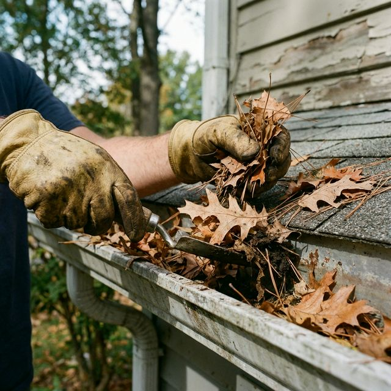

Hire Professional Gutter Cleaners and Say GOODBYE to the Unhealthy Life
Say goodbye to leaves and debris clogging your drainage system by hiring us — we are known as the best gutter cleaners Melbourne, providing commercial and residential properties with professional gutter cleaning services. With our premium cleaning services Melbourne, your home will return to healthy drainage quickly.

Roof and Gutter Cleaning Melbourne: Prevent Blockages and Protect Your Home
Your gutters collect debris that is rarely evacuated due to rain. When water cannot flow freely due to blockage, water can overflow or backflow into the ceiling area. Homeowners often ignore roof and gutter cleaning until issues arise. Blocked downpipes are another problem but our gutter cleaning service can resolve it.
After our vacuum gutter cleaning Melbourne, your home's gutters and drains will be back up and running. By cleaning your gutters, you avoid many potential problems, including:
- Gutter overflows and leaks
- Roof and basement flooding
- Cracked nails and structural damage
- Mould growth
- Insect infestations and bacterial outbreaks
- Roof fire (due to dry leaves)
Why Choose Services for Gutter Cleaning Melbourne?
You can choose our roof and gutter cleaning Melbourne services because we offer the following:
Affordable & Easy to Book
Affordable and easy-to-book service that fits your schedule and budget.
Experienced Technicians
Experienced technicians will clean your gutters and downspouts properly.
No Risk to You
You won't jeopardise yourself by climbing the ladder and trying to clean up.
Save on Costly Repairs
Save on costly repairs and extend the life of your home with regular cleaning.
Prevent Property Damage
Regular cleaning of gutters will prevent property damage from water overflow.
Twice-a-Year Cleaning
Reliable gutter cleaning should be done at least twice a year to reduce water damage risk.
What is Included in the Roof and Gutter Cleaning Services Melbourne?
BABA Cleaning offers professional roof and gutter cleaning Melbourne with years of experience, providing safe and effective results.
FAQ About Gutter Cleaning Services Melbourne
How long does gutter cleaning take in Melbourne?
Generally, a gutter cleaning service will take two to three hours. This time will largely depend on the number of gutters to be cleaned, the total length of the gutters and the accessibility of these gutters from above or below. The duration of the work will also be highly dependent on the condition of the gutters at the time of commissioning.
How often should you clean your gutters?
You should clean your gutters 2 to 4 times a year. The frequency of gutter and roof cleaning should be guided by the number and type of plants you have near your home. You should always clean your gutters every year, even if you don't have trees near your home or don't have a gutter guard.
Contact Us for Gutter & Roof Cleaning Melbourne
BABA Cleaning is renowned for providing an outstanding level of roof and gutter cleaning services Melbourne and will go to great lengths to ensure that you are completely satisfied with everything we do. Don't hesitate to contact our friendly team!